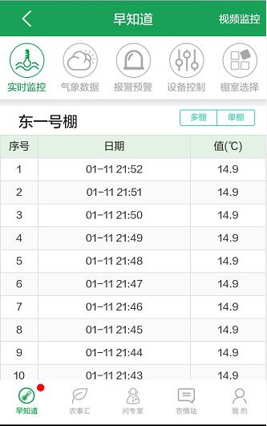
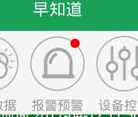
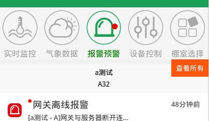

早知道App用户手册
1 APP简介
早知道的全称为庄络农业设施智能增温手机客户端系统，是廊坊市大华夏神农信息技术有限公司自主研发的以基于云计算的农业物联网智能增温云服务平台为支撑后台的用于智能化增温装置的智能手机App软件。利用该App可随时随地查看温室大棚的空气温度、土壤温度、空气湿度等环境因素、供暖设备的炉膛温度、进出、水温度等运行状态的各个指标数据，可以查看各指标今天（近24小时）、昨天、前天的指标数据变化曲线，掌握温度变化规律。同时，利用该App可随时监测设备运行状态，查看棚温温度变化以及系统具有高温、低温报警、预警等功能。
2 下载安装
android手机通过访问http://115.28.140.121:8480/aiot2/zzd.html进行下载安装,或扫描二维码
3 查看各指标变化曲线
变化曲线
单击列表项中任一监测指标的变化曲线图（图8左侧），数据为每小时的平均值，还可查看该指标的近24小时、昨天、前天等近3天的数据变化曲线图。对于同类型指标（比如棚中温度、棚近温度、棚远温度属于同一类指标）可进行同屏显示。例如：图8右侧为望都京申蔬菜专业合作社-东1号棚，棚中、棚近、棚远三个指标1月11日的对比变化曲线。
具体操作：单击变化曲线页面右上角【单棚】按钮，然后选择另一种数据，即可显示几种数据的对比曲线图。如下图右所示:
多棚对比
除了单个棚同类指标可同时显示外，还具有单个指标不同棚之间的数据对比功能。利用该功能，可对比同一个园区不同棚之间同一指标的变化曲线，以及不同园区不同棚之间的对比曲线图。
具体操作：单击变化曲线页面右上角【多棚】按钮，即可进入多棚对比页面。如下图9所示:
4 查看历史数据
App具有历史数据查看功能，可查看任一监测指标近一周每分钟采集数据，如下图所示。具体操作：单击变化曲线页面右上角【列表】按钮，即可进入历史数据列表页面。如下图10所示，可翻页浏览

5 报警预警说明
早知道手机App设备报警、环境报警与预警通知功能，比如当远端供暖设备发生点火失败、水位过低等而产生报警时，会自动将报警信息上传到远程云平台，云平台会将报警信息第一时间推送手机用户,这样手机用户可随时掌握设备运行情况，能及时了解设备是否正常运行。常见警情参见表1。

当产生报警信息时，还有 “小红点”智能提醒显示功能。对于有未读的报预警信息，如果当前大棚有未读报警预警，则在报警预警菜单上显示小红点.如图
 如果所有大棚有未读的报警预警信息时，则在早知道栏目上显示小红点.如图
如果所有大棚有未读的报警预警信息时，则在早知道栏目上显示小红点.如图
在报警预警页面用户可以点击右侧按钮来切换显示所有大棚报警预警和当前大棚报警预警

此外系统还能具有报警、预警参数设置，以及报警项启用、停用。如图所示：
表1 常用报警类型一览表
| 序号 |
报警分类 |
报警项 |
备注 |
| 1 |
设备报警 |
点火失败报警 |
两次点火不成功时 |
| 2 |
水位过低报警 |
水箱水位触发水位开关时 |
| 3 |
设备离线报警 |
App无法连接到设备时 |
| 4 |
数据未更新报警 |
数据没有按时更新时 |
| 5 |
炉温过高报警 |
炉温或热气温高于阈值时 |
| 6 |
熄火报警 |
加温状态下炉具熄火后 |
| 7 |
出水温度过高报警 |
出水温度过高可能开锅时 |
| 8 |
设施环境报警 |
白天高温报警 |
白天气温高于作物适宜值时 |
| 9 |
夜间低温报警 |
夜间气温低于作物生存下限 |
| 10 |
地气温差超限报警 |
气温与土温差距过大时 |
| 11 |
土温过低报警 |
土温低于设定阈值时 |
| 12 |
大风报警 |
气象哨观测到刮大风时 |
| 13 |
设施环境报警 |
白天高温预警 |
指定未来时间气温可能过高时 |
| 14 |
夜间低温预警 |
指定未来时间气温可能过低时 |
| 15 |
大风预警 |
天气预报夜间可能有大风时 |